\1) First, open the Configuration View under:
Project Startup → Configuration

\2) In the Project Configuration view, the following tools are provided (once the first Searchable Type has been created):
View | Load the list of the items for that Search Type in the panel below. The drop down selection next to the View button switched the layout view between: Tile, List, Content, Task Schedule, Check-in, Overview, Tools. |
Add | Add new item to Search Type. |
Import | Import items from a CSV file into that Search Type. |
Custom Columns | Add custom columns of a datatype to the Search Type.s |
Workflow | Add processes to the workflow and specify the different Task Statuses |
Notifications | Add an email notification: on an event, perform an action. |
Triggers | Add a trigger: on an event, perform and action. |
Edit | Edit the Search Type. |
Note
_(Advanced)_To go to the Advanced Project Setup Tools click on the button on the top right with the black graduate cap.
\3) (Advanced) In the Project Configuration view, the following tools are provided (once the first Searchable Type has been created):
Add new sType
Registering a new sType or "Searchable Type" in TACTIC provides opportunity to track separate list of items. From a technical standpoint, a new sType is a separate table in the project’s database. This allows for the following configuration aspects:
- Views
- Custom Columns (properties)
- Workflows processes and status
- Notifications
- Triggers
- Tools
- Security
- …and more
To register a new sType, click the [+] button in the top-left of the configuration page. The Register a new sType wizard will appear:

Information
Project Specific | (available when creating a new sType for a project that is based on a template) |
Title | The title for the sType is used in the UI for display purposes. |
Searchable Type | Refers to the database name for the sType. in a "<project>/<name>" format. If no project is defined (i.e.. "art/") than the current project namespace will be used. |
Description (optional) | An optional description of the sType. |
Once the fields are completed, press "Next" or press "Register" to complete the registration process. Note: It is recommended to go through the series of steps outlined in the "Register a new sType" wizard, as this allows for quick and easy configuration of the new sType that is outside of the TACTIC defaults.
Workflow

Items have a Pipeline? | When selected, sets up an association for a pipeline workflow for the sObjects in that sType. The section below describes this relationship in more detail |
Process (optional) | Stages in the process. eg. processes for an asset sType: design, model, texture, rigging eg. processes for a shot sType: layout, animation/fx, lighting, render, comp |
Preview Image

Preview Image (optional) | Browse to select a preview image for the new sType. |
Columns

Include Preview Image? | Preview image for each item (sObject) of that sType. |
Add Columns to sType (optional) | During the registration process, default columns are added to the new sType table. You can also add additional columns during this process. Note - columns can be added after this process using the Table Manager |
Finish

Finish | To complete the registration process, press "Register". A this point, the option is provided to go back and change any information by clicking on the "Back" button. |
View Items
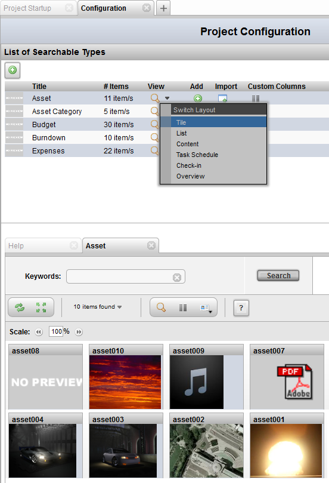
How to view items for a Search Type
1) First, open the Configuration View under:
Project Startup → Configuration
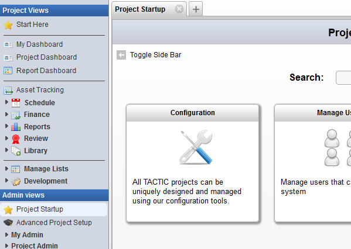
2) Next (assuming a Searchable Type has already been created), click on the View button corresponding to the type to view items for.
Note
Next to the View button is down arrow which opens up a selection list. This list contains different layouts to display the items below.
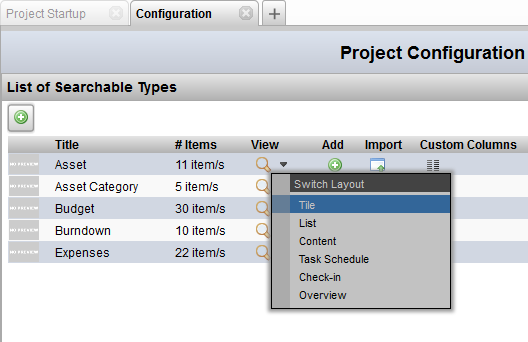
3) Finally, look in the lower panel for the view of the items for the requested Search Type. Below is a sample of the different item layouts.
Tile View
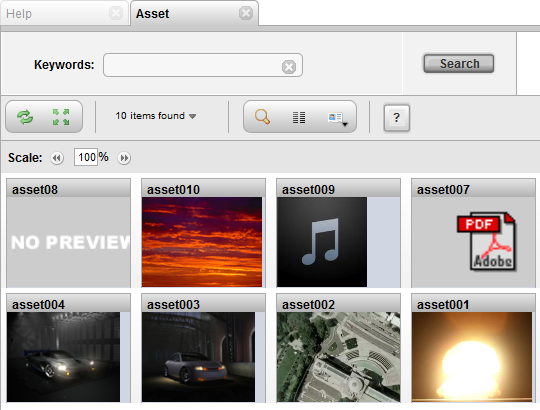
List View
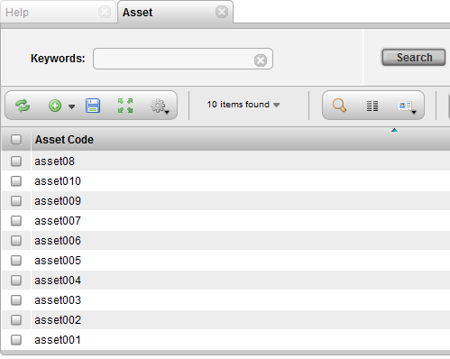
Content View
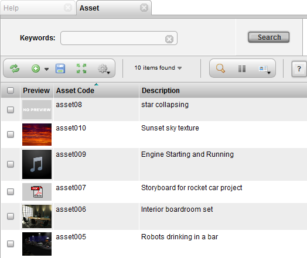
Task Schedule View
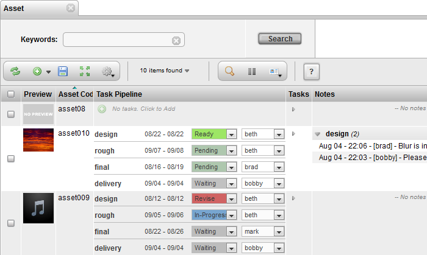
Checkin View
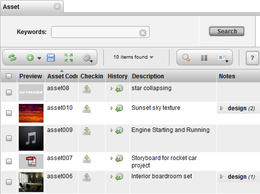
Overview
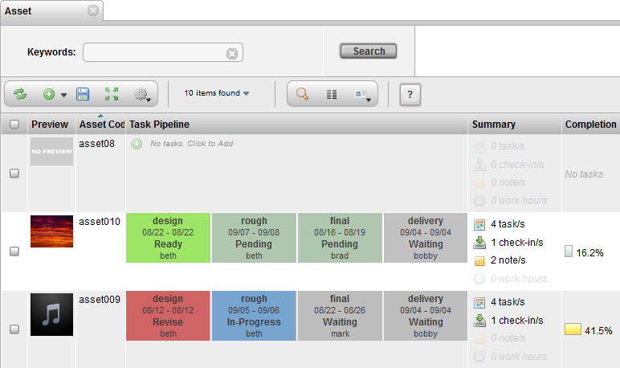
Add Items
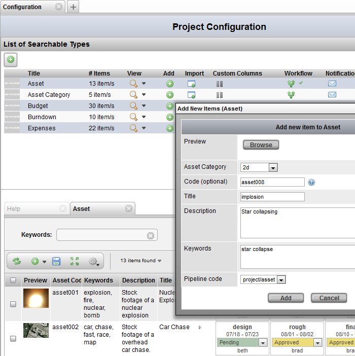
How to add an item to a Search Type
1) First, open the Configuration View under:
Project Startup → Configuration

2) Next (assuming a Searchable Type has already been created), click on the Add button corresponding to the type to add an item to.
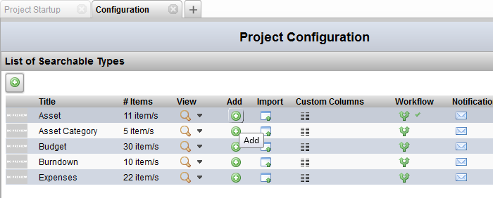
3) The Add New Item to Asset pop-up will appear. Fill in the input fields and hit Add to add the item to the type.
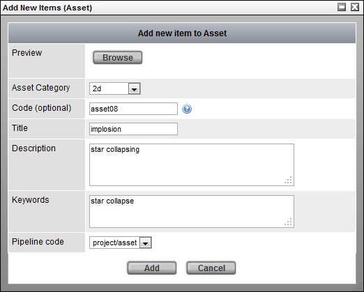
4) Finally, to view the newly added item, click on the View button to view all the items for that type.
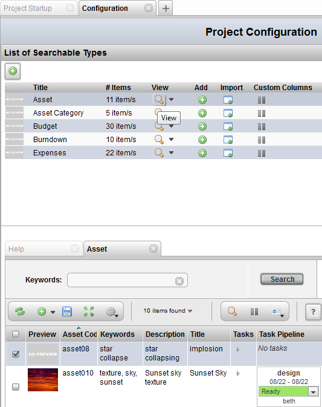
Workflow

How to Edit the Workflow for a Search Type
1) In the Project Startup → Configuration View (assuming a Searchable Type has already been created), click on the Workflow button corresponding to row of the search type to edit.

2) In the Workfllow pop-up:
First, add or subtract rows which represent processes in the workflow.
Examples of entries for the Process field:
design rough final delivery
Next, modify and/or re-order the comma separated list of Task Statuses.
Example of an entry for the Task Status field:
Waiting, Pending, Ready, Review, Revise, Approve, In-Progress

3) (Optional) To add triggers for the process, click on the trigger button just on the left of the plus/minus buttons to create a new trigger for this process.
For further help on how to add a new trigger, refer to the Project Automation - Triggers documentation by clicking on the question mark [?] in the Triggers UI to show the help for this interface.
Notifications
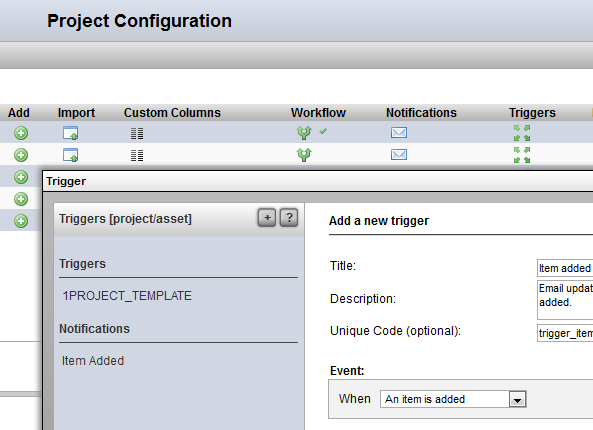
How to Add a Notification for a Search Type
1) In the Project Startup → Configuration View (assuming a Searchable Type has already been created), click on the Notification button corresponding to row of the search type to edit.
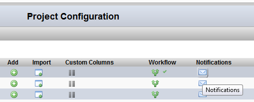
2) In the Notifcation pop-up (the title for the pop-up might be labelled Trigger):
Click on the plus [+] button to create a new notification. This will open the trigger/notification UI.

Notifications and Triggers work together in many ways. A notification is defined as an Action. To send a notification, an event must occur.
In the Action drop down list Send a Notification must be selected.

Send a Notification - This action will send a notification. The action box will open additional options to insert a subject and message.
Example 1
Below is an example of a notification being sent on the event when a task status is changed to review:

The Mail To: and Mail CC: input fields accepts the following types of input:
Email - Capability to add regular emails allows to send personal email addresses e.g. joe@my_email.com
Group - Capabilty to send to a group of users in TACTIC e.g. Supervisor
Expression - Capabilty to insert expressions that specifies a user in TACTIC. It could be pointing to an sobject - @SOBJECT with an email attribute or pointing to just the login name of the user - @GET. e.g. @SOBJECT(sthpw/login) @GET(sobject.assigned) @GET(sobject.supervisor)
Send a Notification - This action will send a notification. The action box will open additional options to insert a subject and message.
Example 2
Below is an example which uses more expressions for a notification being sent whenever a task is assigned.

Triggers
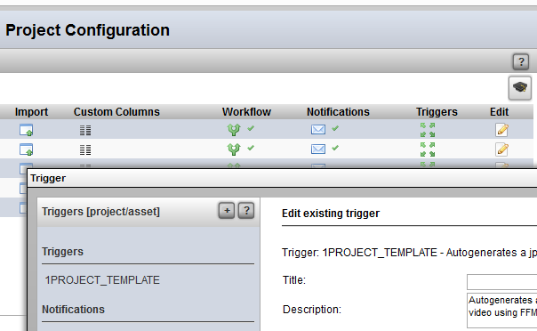
How to Add a Trigger for a Search Type
Note
These workflow triggers are the same as the regular triggers but are scoped/filtered for the particular process.
1) In the Project Startup → Configuration View (assuming a Searchable Type has already been created), click on the Triggers button corresponding to row of the search type to edit.
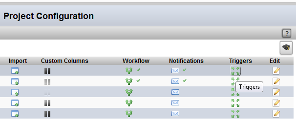
2) In the Triggers pop-up:
Click on the plus [+] button to create a new trigger. This will open the trigger/notification UI.
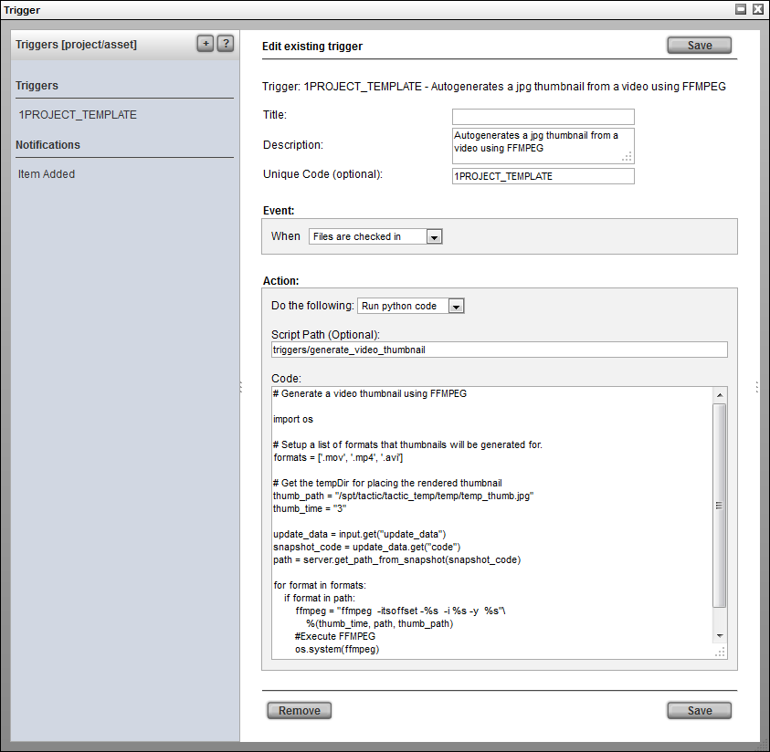
For further help on how to add a new trigger, refer to the Project Automation - Triggers documentation by clicking on the question mark [?] in the Triggers UI to show the help for this interface.
Edit sType

How to Edit a Search Type
1) First, open the Configuration View under:
Project Startup → Configuration

2) Next (assuming a Searchable Type has already been created), click on the Edit button corresponding to the search type to edit.

3) Finally, the edit pop-up will appear to allow modifiications to the sType.

Note
The field Search Type, indicating the name of the Search Type cannot be modified once the type has been created.